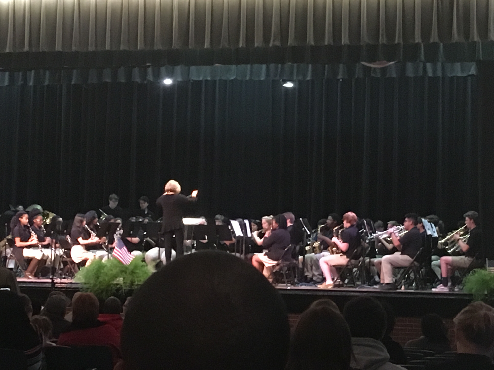
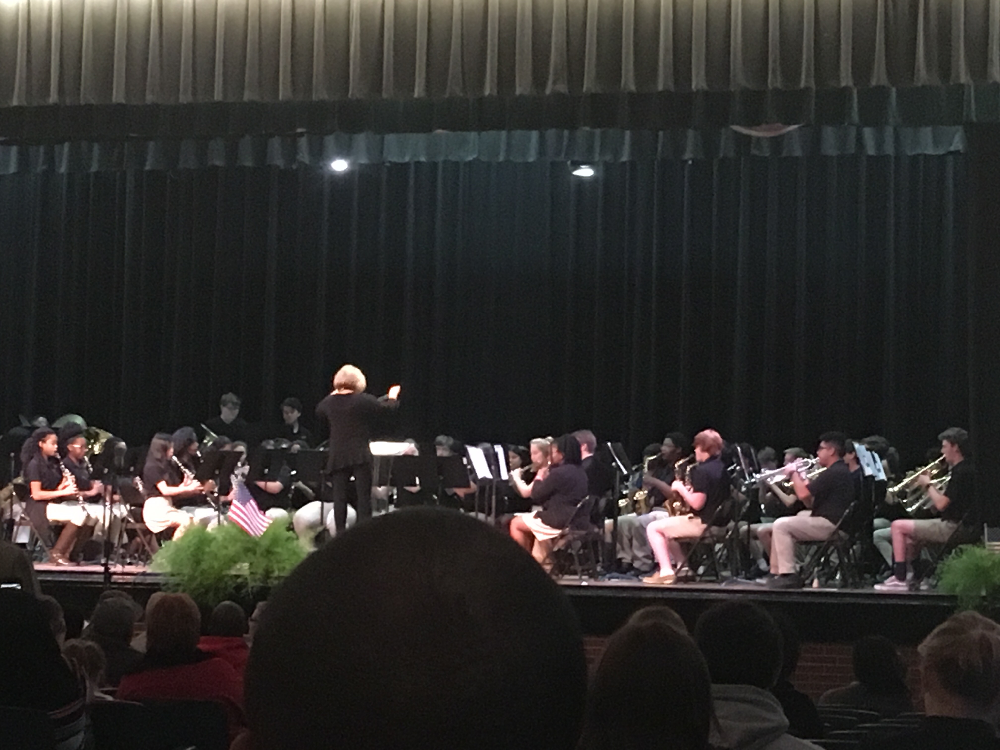

About Us
Mrs. Kristy White has been the Director of bands since the 2015-2016 school year. Since then, the Madison Band has made many great achivements, both as a group and as individuals. With the direction of Mrs. White, the band has gone to Concert Festival and scored a 1 out of 5 every year, and have been invited several times to the State Concert Festival. Mrs. White has also helped her students individually get into various musical groups, such as All West and All State orchestras and bands, as well as the Jackson Symphony Youth Orchestra, and the band students at Madison are all thankful to Mrs. White for her guidance. To join the Madison Band, you have to be a student at Madiso, and you must have previous band experience, such as playing in a middle school band, or must be recieving private lessons. However, it may be neccessary to audition for the band, unless you are an incoming freshman. All freshman wind and brass players will take one semester of freshman band in the fall semester to prepare to join the advanced band in the spring. To contact Mrs. White with any questions about the band or how to become a part of it, see the contact information below.
 
